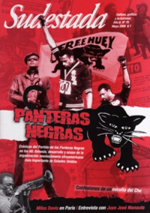

Buscar
Juan José Manauta
Una infancia marcada por el hambre y la soledad es el territorio por el que transita el autor de un clásico de la literatura argentina: Las tierras blancas. En esta entrevista con Sudestada, Manauta propone regresar con la memoria como puente a su niñez en Gualeguay y a sus primeras lecturas, mientras revitaliza su compromiso consecuente por el marxismo. Manauta, el narrador aquél que Oliveira -el protagonista de Rayuela, de Cortázar- menciona a su regreso a Buenos Aires.
Edición N° 78
Mayo 2009
Revista bimensual
Comprar edición impresaSumario
- Panteras Negras: de Malcolm X a la revolución
- Mozo, hay un mosquito en mi campaña
- De regreso a Cunco
- Miles Davis en París
- Alberto Castellanos, el escolta del Che
- Juan José Manauta
Compartir Articulo

De estilo realista, con la aparición de Las tierras blancas, Juan José Manauta inaugura un naturalismo poético que recoge la herencia de la escuela norteamericana, y siembra un estilo narrativo que se encarga de denunciar la violencia y las injusticias sociales. El escritor Abelardo Castillo escribió sobre él: "Juan José Manauta es el único escritor argentino vivo que ha escrito un libro clásico". Sin embargo, una vida fuera de los cánones habituales y de los ojos sediciosos del mercado genera que sean pocos los libros de Manauta que hoy pueden encontrarse en las principales librerías del país. De todos modos, su nombre pertenece ya a la mayor tradición de la literatura argentina y a la memoria crítica de sus lectores. Por eso, la oportunidad de esta charla con un hombre sensible y apasionado.
-Después de tantos años de trabajo con la palabra, ¿qué puede decirnos acerca del oficio del escritor?
-Lo que hay que valorar y analizar de un autor es lo que ha escrito. No lo que diga sobre lo que escribió. Lo que no está, y lo que diga el propio autor al respecto no tiene relevancia. Pueden los críticos y los lectores comentar la obra, pero el escritor ya hizo su trabajo.
-Su obra, en general, examina las desgracias de los marginados; seres excluidos pero con gran vitalidad y un sentido ético admirable. ¿Cómo construyó ese universo literario?
-Nací en una escuela de alfabetización. Mi madre era la directora, y el gobierno de la provincia de Entre Ríos les daba merienda en la propia escuela a los chicos que venían a aprender a leer y a escribir. Yo tenía decenas de amigos, chicas y chicos. De ese modo, conocí desde mi infancia algunos perfiles de mi condición social. Vivíamos con el barrio pobre. Las tierras blancas son tierras erosionadas por las inun¬daciones. El agua se llevaba la parte fértil del suelo, lo que quedaba era la greda, esa tierra degradada, sucia. La casa escuela caló muy hondo, por eso es tan importante la memoria. La memoria afina las cosas, las estiliza y las valoriza. Es mucho más eficaz que la confrontación inmediata.
-De sus años de infancia y de esa escuela que describe en varias ocasiones en sus relatos ¿qué es lo que más recuerda?
-La escuela en la que vivía tenía una jurisdicción. Entonces mi madre y las dos o tres maestras que había en la escuela salían a censar a los chicos en edad escolar. Iban con toda la energía a un rancho y preguntaban casa por casa cuántos chicos había y qué edad tenían. La enseñanza era gratuita, laica y obligatoria. Los chicos en edad escolar tienen la obligación de ir a la escuela. Los padres decían que no, que cómo iban a ir si no tenían guardapolvos ni zapatillas. Lo importante, decía mi madre, era que a la hora de comer, iban a comer. Esa fue mi infancia.
-¿Qué aprendió de los chicos con los que compartió esos primeros años?
-Nadie se imagina lo sabio que se convierte un chico que no come. Un chico con hambre, crece. Ahora se degeneran con los narcóticos, que por suerte en aquel tiempo no se conocían. Pero lo que un chico con hambre puede hacer, es terrible. Con uno tuve una discusión porque con una moneda que tenía yo quería comprar caramelos, y él fue y compró galletas. Él había comido aquella vez, pero no tenía la seguridad de volverlo a hacer. Hay que diferenciar el apetito con el hambre, el hambre no se satisface. Un chico hambriento, pobre, indigente sacia su apetito momentáneo. El hambre es la inseguridad, como sinónimo de temor, de no volver a comer.
Cada vez más marxista
En el contexto literario argentino, el entrerriano Juan José Manauta se erige como símbolo de una generación marcada por el realismo, que indaga por sobre la mera protesta social para penetrar en nuevas formas narrativas. La voz de Manauta, como la de su amigo y mentor Juan L.Ortíz, logra siempre dar una visión precisa de las tierras erosionadas y olvidadas de Gualeguay, los campesinos alejados por la miseria y las huellas de un territorio estéril.
En 1956, con la publicación de Las tierras blancas, historia situada en un domingo de elecciones, que según el propio Manauta refleja el éxodo de los campesinos entrerrianos y el desarraigo de estos trabajadores en su tierra, corridos por el latifundio y la miseria, conjuga su visión política con un magistral contrapunto poético entre Odiseo y La Madre. Desde la primera línea, La Madre hace carne la relación con su pequeño Odiseo, y desgarra dulcemente con la aproximación trágica que llega al final. No sólo se logra dar un particular retrato de un cierto sector excluido, emerge la militancia como lucha y como respuesta frente a un orden desigual y establecido.
Desde los primeros años de su adolescencia, por las lecturas constantes de los clásicos rusos (Dostoievski, Tolstoi, Chéjov y Turgueniev) quedó conmovido por la novela La Madre, de Máximo Gorki. Su afiliación al Partido Comunista no se vería modificada por las contradicciones del régimen stalinista, y su lucha ideológica se haría cada vez más visible en los telones de sus obras. "Y otra vez el hambre. Otra vez el hambre, y es como decir: otra vez la mañana, el atardecer, el mediodía. Otra vez la primavera.", reza una frase en el comienzo del libro. Los personajes se mueven con el mate como verdadero compañero de la angustia que arrin¬cona, la única esperanza de sobrevivir al mañana para hacerle frente a una batalla imposible. Y no en vano se coloca la dura imagen social con la realidad concreta de las elecciones. Los hombres y niños asisten a los regimientos con tal de comer empanadas o asado con cuero. Por eso debemos comprender, como señala Abelardo Castillo: "Es un clásico de la literatura argentina. Aunque tal vez no ha sido tan olvidado como otros libros, es muy difícil de conseguir. Manauta es un clásico contemporáneo y hoy no se lo lee bien, aunque han salido sus cuentos completos editados por una universidad. Pero hay lo que llamo una justicia poética. En Rayuela, de Cortázar, cuando Oliveira viene a la Argentina el único escritor por el que pregunta es por Manauta. La publicación de Las tierras blancas, además de una justicia con el autor es una especie de homenaje a Oliveira". Es por eso que la obra de Manauta pertenece al más vivo testimonio de lucha, de belleza y amor por la justicia a través de las posibilidades y los artificios del lenguaje.
-Mencionó, en alguna oportunidad, la importancia que tuvo la obra La madre de Máximo Gorki en su visión del mundo.
-La madre fue el primer libro que leí en serio. Yo tenía 15 años, y un tío anarquista mencionó su nombre. En un principio me quedó en el oído, entonces fui a la biblioteca y cuando me trajeron lo que buscaba, me impactó. Desde ese momento, me propuse escribir como Gorki.
-¿También influyó en su cosmovisión política?
-Yo ya era comunista. Sigo siendo marxista, y a medida que pasaron los años, me fui haciendo cada vez más: creo que Marx es el gran genio de la sociología, ya que anuncia una vida justa, solidaria, de fraternidad y de no explotación.
Radiografía del hambre
Los novelistas rusos del siglo XIX fueron los primeros en entender que la literatura también puede ser una herramienta de combate. Retrataron en forma minuciosa la difícil situación social que dejaba el zarismo para anticipar los primeros rasgos de la revolución bolchevique. Algunos, como Maiakovski, intentaron ir a la par de la corriente futurista que debía unirse a la transición del régimen.
De esa forma sucedió con los surrealistas -habían heredado el je suis un autre de Rimbaud y las primeras pruebas de campo de Alfred Jarry- que intentaban subvertir los órdenes de la realidad en las filas del marxismo. En Latinoamérica lo tendríamos a Vallejo ("Hay golpes en la vida, tan fuertes... ¡Yo no sé! Golpes como del odio de Dios; como si ante ellos, la resaca de todo lo sufrido se empozara en el alma... Yo no sé!"), a Neruda con un pie en defender la grandeza de América y la belleza de la palabra. Una tradición que permaneció con escritores pos¬teriores dispuestos a hablar desde un lugar íntimo, cercano, con el fin de denunciar desde un ángulo audaz y provocativo.
El nombre del niño creado por Manauta desde el comienzo representa un guiño: Odiseo es sinónimo de aventura, astucia e inteligencia. Es el héroe clásico forjado en las páginas de La Odisea que supera conflictos para encontrar la causa de su destino. Es por eso que gracias a las lecturas tempranas que lo conmovieron, Manauta trans¬forma el sentido chato que teníamos sobre el abandono y la pobreza. Vuelve hacia nosotros el concepto y también lo humaniza. A su vez, es heredero de la tradición social de los rusos. ¿Qué otro final hubiera encontrado Odiseo en su búsqueda imposible frente a la sed de la muerte?
Las dulces ofrendas del panadero o la triste vista frente a la tarde que muere, los personajes que rodean a Odiseo en su lucha por sobrevivir, la angustia de La Madre que ve a su hijo aun cuando se encuentra de espaldas. Con Las tierras blancas, Manauta logró denunciar las desgracias de un mundo en descomposición desde las entrañas de un universo nuevo e inextinguible.
-¿Por qué eligió dos voces de narradores para contar la historia de Odiseo y su madre?
-La elegí por John Dos Passos. En sus novelas utiliza este procedimiento. En toda narración extensa existen contrapuntos, como en El Quijote... La madre es la que puede pensar, le da el tinte poético a la historia. Por eso no es una novela solamente de aventura, como lo es desde la visión de Odiseo, sino de construcción sociológica.
-Lo que resulta destacable es que un hombre haya podido constituir y encarnar una madre en una novela.
-El trabajo de un escritor es poder convertirse en otra cosa: una madre, un ladrón, personificar y encarnar. Escribir es el último paso, por eso transformarse en el personaje es lo más difícil. Desde la encarnación, el cuento no es más breve que la novela. El cuento hace que el escritor esté en situaciones diferentes. En última instancia, nos referimos al ser humano.
- Usted creó a Odiseo, a la madre, y a un sinfín de personajes. ¿Cómo se pensaría a usted mismo en una ficción?
-No podría dar una definición exacta sobre mi persona. Uno siempre se está buscando a sí mismo, porque es la única manera que tenemos para aprender sobre nuestros pares. Lo único que marca el fin de esa búsqueda es la muerte.
Comentarios
Rodrigo Díaz y Mariano Di Blasi
Articulos más vistos


LIBRERÍA SUDESTADA

Colección infantil

Distribuidora de Libros

Suscripción

Sudestada en URUGUAY

Otros articulos de esta edición
Panteras Negras: de Malcolm X a la revolución
Huey P. Newton es el protagonista de esta historia. Pero también Eldridge Cleaver, Stokely Carmichael, Angela Davis, Mumia Abu-Jamal y ...
 Editorial
Editorial
Mozo, hay un mosquito en mi campaña
Las redacciones de los grandes medios están bien protegidas. Allí, son inmunes a todo. Sobre todo, a la realidad. Allí, ...
 Dossier
Dossier
Miles Davis en París
Antes de ser el que electrificó el jazz, Miles Davis comandó el quinteto más sublime de su historia, el que ...
Alberto Castellanos, el escolta del Che
Alberto Castellanos peleó en la sierra, fue parte del Pelotón Suicida y chofer y escolta del Che Guevara. Integró el ...
 Crónica viajera
Crónica viajera
De regreso a Cunco
Después de tres décadas de ausencia, un fotógrafo chileno regresa a su tierra natal, Cunco. A partir de las imágenes, ...